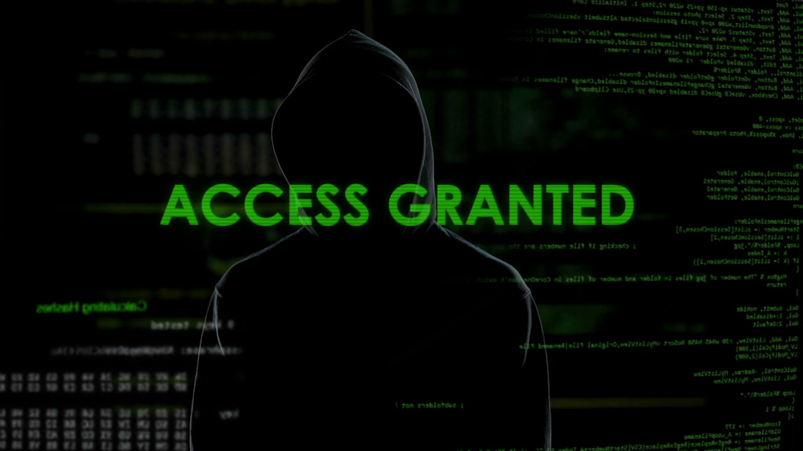

Speel muziek af voor je winst:
Je hebt alle 7 challenges verslagen. Hierbij moest je creatief nadenken en technische kennis opbouwen. Goed bezig! Als je je er meer in verdiept kun je een security specialist worden.
Een aantal die je bent tegen gekomen in de challenge:
HTML: De code waarop alle websites gebaseerd zijn. Je kan op elke website de HTML-broncode bekijen en zien hoe het in elkaar zit!
Base64: Een manier om data te encoderen die soms misbruikt wordt om wachtwoorden te "beveiligen".
ROT13: Een cipher waarbij alle letters 13 plaatsen in het alfabet worden verplaatst. Dit wordt soms ook gebruikt om geheime informatie te verstoppen.
Gelekte wachtwoorden: Soms kunnen wachtwoorden gelekt worden op het internet, je kan ze van bijvoorbeeld met haveibeenpwned of via google vinden!